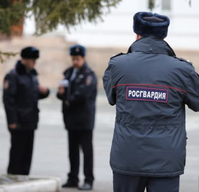

Глава Росгвардии УрФО уходит в отставку, отслужив меньше года
Медалью «За отвагу на пожаре» награждены сотрудники Тюменской авиабазы
Предупреждение и ликвидация лесных пожаровШколы Тюменской области приняли 44 ребенка из ДНР и ЛНР
Помощь жителям ЛНР, ДНР, УкраиныБорьба с природными пожарами продолжается в Тюменской области
Предупреждение и ликвидация лесных пожаров, Правительство Тюменской областиВ Тюмени продлили коронавирусные ограничения, но зато отменили запрет на работу аттракционов
Ограничения и масочный режим будут действовать в регионе как минимум еще месяц12 мая 2022
Александр Моор: межнациональное согласие - важное условие динамичного развития региона
Правительство Тюменской области